3 CONSTRUCTIONS IN THE PLANE AND IN SPACE
3-1. Divide a given segment AB into four equal parts using a compass and a straightedge, drawing a total of 6 lines (straight lines and circles).
3-2. Two points A and B are given in a plane. Construct the midpoint of the segment AB using only a compass (without a straightedge).
3-3. Construct a triangle with a compass and a straightedge, given two sides \(a\) and \(b\) (\(b > a\)), if it is known that the angle opposite one of them is 3 times larger than the angle opposite the other.
3-4. Construct a circle of a given radius, tangent to a given line and a given circle, using a compass and a straightedge.
3-5. Construct a circle tangent to two given parallel lines \(l\) and \(m\) and a given circle of radius \(r\) located between \(l\) and \(m\), using a compass and a straightedge.
3-6. A point F is given inside a given acute angle AOB. Construct, using a compass and a straightedge, a point M on the side OA that is equidistant from point F and the other side of the angle, OB.
3-7. A segment of length 1 is given in a plane. Construct a segment of length \(\sqrt{1+\sqrt{2}}\) using a compass and a straightedge.
3-8. A ruler with markings every 1 cm is given. Construct, using only this ruler, a line perpendicular to a given line.
3-9. A parallelogram OBCA is given. A line is drawn that cuts off one-third of the side OA and one-fourth of the side OB, counting from the vertex O. What part of the diagonal OC does this line cut off?
3-10. Two parallel lines are given, and two points A and B are marked on one of them. Divide the segment AB into 3 equal parts using only a ruler.
3-11. A convex quadrilateral is given. We draw two lines that divide two of its opposite sides into three equal parts. Prove that the area between these lines is one-third of the area of the quadrilateral.
3-12. Points A, B, and C are the vertices of a non-isosceles triangle. In how many ways can we place a point D in the plane so that the set of points {A, B, C, D} has an axis of symmetry?
3-13. From an arbitrary point M inside a given acute angle A, drop perpendiculars MP and MQ to its sides. From vertex A, drop a perpendicular AK to the segment PQ. Prove that \(\angle PAK = \angle MAQ\).
3-14. Construct a regular decagon using a compass and a straightedge.
3-15. Draw a circle and divide it into 12 equal parts. Choose one of the division points A and connect it with straight lines to the other division points, and also draw a tangent to the circle at point A. As a result, you will have a pencil of 12 lines passing through point A.
Prove that the constructed lines divide the plane into 24 equal angles.
Choose another division point B on the circle and construct from it the same pencil of 12 lines as from point A. Prove that all 110 intersection points of the 23 constructed lines (excluding points A and B) lie on 11 circles - 10 points on each circle.
3-16. On a rectangular billiard table with sides of integer length (in suitable units, e.g., cm, where the lengths are natural numbers), a ball rolls at an angle of 30° to the wall of the billiard table. Prove that the ball will never hit a corner. (Of course, the ball is considered a point.)
3-17. Four points are located in a plane. Can:
the pairwise distances between them be equal to 1 cm, 2 cm, 3 cm, 4 cm, 5 cm, and 6 cm, respectively;
five pairwise distances between them be equal to 1 cm, and the sixth be 1.8 cm?
3-18. Into how many parts can four lines divide a plane?
3-19. Into how many parts do the following divide space:
four;
five planes passing through one point (no three planes have a common line)?
3-20. A convex tetrahedral angle is given. Construct a section of it by a plane such that the section is a parallelogram.
3-21. Prove that any triangular prism with a sufficiently large height can be intersected by a plane such that the section is an equilateral triangle.
3-22. Andrei cut a convex cardboard polyhedron along the edges and sent the resulting set of faces by mail to Kolya. Kolya glued all these faces together to form a convex polyhedron. Could it happen that Andrei’s and Kolya’s polyhedra are not the same?
3-23. Does there exist a convex nonagon in which all nine faces are quadrilaterals?
3-24. It is given that the net of some pyramid is an acute triangle in which three midlines are drawn. Prove that there exists a rectangular parallelepiped whose four non-adjacent vertices are the vertices of this pyramid.
3-25. A trihedral angle is given with vertex O and dihedral angles equal to \(\alpha\), \(\beta\), and \(\gamma\). From vertex O, a ray perpendicular to each face is drawn, directed outward (i.e., so that this ray and the trihedral angle lie on opposite sides of the plane of the face). Find the plane angles of the trihedral angle formed by the constructed rays.
3.1 Problems Discussion
Problem 3-1. Draw two circles of radius AB with centers at points A and B. Through the intersection points of these circles, draw a line that intersects segment AB at point C. Now draw a circle with center at point C and radius AB. This circle will intersect each of the drawn circles at two points. Finally, draw two lines through these two pairs of points - see Figure 13.
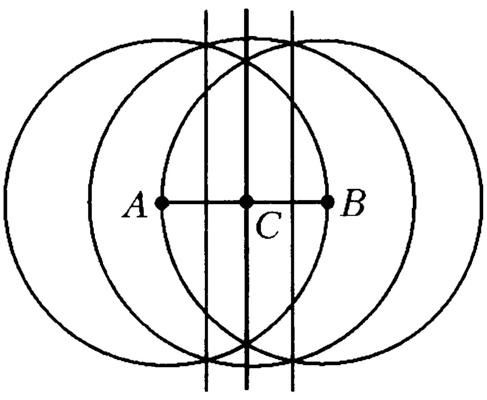
Thus, we have drawn 6 lines: three circles and three straight lines. Let’s prove that the three drawn lines divide segment AB into four equal parts.
As is known, the locus of points equidistant from the ends of a segment is the perpendicular bisector of that segment - a line drawn through the midpoint of the segment perpendicular to it.
The two intersection points of the first two constructed circles are at the same distance AB from points A and B, so the line passing through them is the perpendicular bisector of segment AB and divides it into two equal parts at point C.
Similarly, the intersection points of the third circle with one of the first two are at the same distance AB from both the midpoint C of segment AB and the end of this segment, so the line passing through these intersection points divides half of segment AB in half again.
To construct using a compass and a straightedge means to reduce the solution of the problem to performing a certain sequence of the following operations:
I. Draw a line through two given points. II. Draw a circle of a given radius from a given center. III. Find the intersection points of: a) two lines; b) a line and a circle; c) two circles.
In our problem, the sequence of these operations is as follows: II, II, III c), I, III a), II, III c), III c), I, I, III a), III a). At the same time, the condition of the problem is fulfilled: the number of operations I and II is equal to six.
Try to come up with ways to divide a segment into 3 or 5 equal parts so that the number of operations I and II is as small as possible. Figure 14 shows a way to divide a segment into 6 equal parts, in which the number of operations I and II is equal to 8.
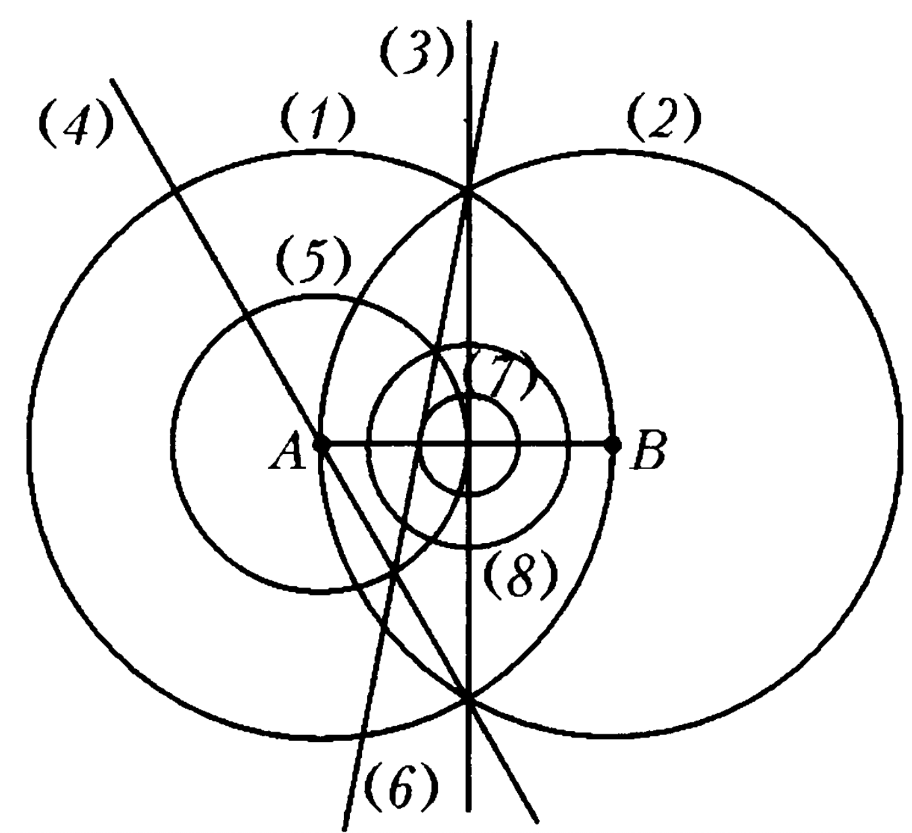
Now, starting from points A, B, and C, let’s find the midpoint of segment AB. Draw a circle with center C and radius CA = 2r (see Figure 15). Mark the points L and M of its intersection with the circle with center A and radius r = AB. Next, draw two circles with centers L and M and radius r = AB. These circles intersect at point A and at another point D.
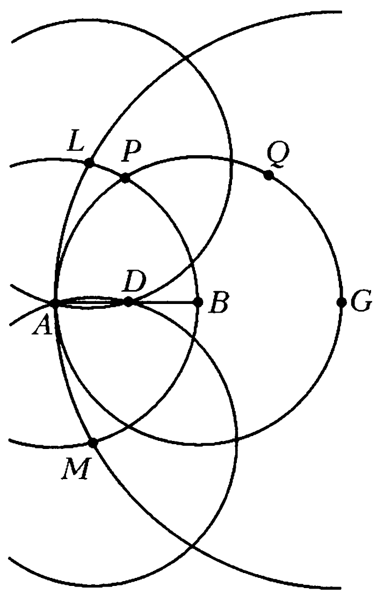
Let’s prove that D is the midpoint of segment AB. Indeed, points L and M are symmetric with respect to line AC, and point D is equidistant from points L and M, i.e., it lies on line AC. Now consider two isosceles triangles ALD and CAL. They are similar to each other because they have a common angle at the bases, A. Let’s write the proportion: AD : AL = AL : CA or AD : r = r : 2r. From this, we get that 2AD = r = AB.
At the beginning of the solution to problem 3-2, we doubled segment AB (constructed point C) by drawing four circles. This construction can be done more economically by drawing three circles - see Figure 16, a.
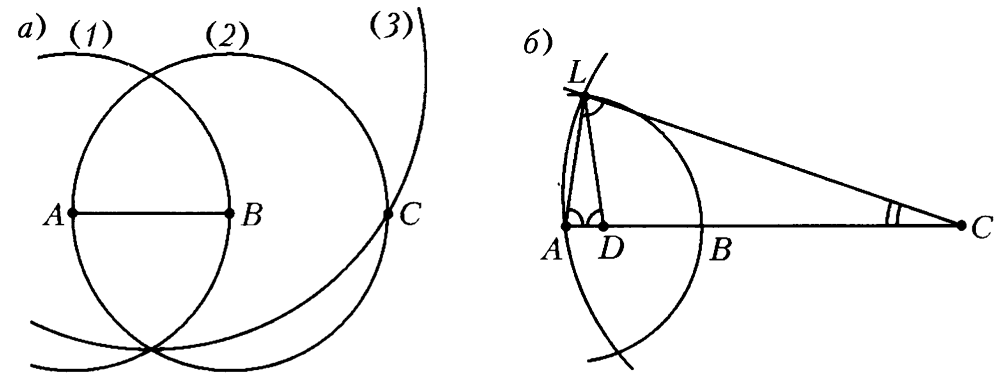
Problem 3-2 can be generalized: to indicate a method for dividing a given segment into n equal parts using a compass. Similarly, we construct segment LC = nAB, and then, similarly, using points A, B, and C, we construct point D - see Figure 16, b. From the similarity of isosceles triangles ALD and ACL, it follows that DA * CA = r^2 (in our case, CA = nr and DA = r/n).
This construction is related to a transformation of the plane called inversion with respect to a circle with center A and radius r = AB. The image of a point P under this transformation is defined as the point P’ lying on the ray AP for which AP’ * AP = r^2. In problem 3-2, we actually constructed the point D, which was the image of point C under inversion.
The inversion transformation has a remarkable property: it transforms lines and circles back into circles and lines.
Using inversion, it can be shown that operations III a) and III b) (finding the intersection points of two lines and a line with a circle), which were mentioned in the commentary to the previous problem, can be performed with a single compass. From this, it can be deduced that any construction problem solvable with a compass and a straightedge can be solved with a single compass (Mascheroni’s theorem). (Of course, we cannot perform operation I - draw a line through two given points - without a straightedge. Instead, we should agree that a line is defined if two of its points are given.) (See [45, 98].)
Problem 3-3. Suppose that triangle ABC is constructed, \(\angle B = 3\angle A\) (Figure 17). Draw segment BE from point B to line AC such that \(\angle ABE = \angle BAC\). Then triangle ABE will be isosceles: AE = BE. Triangle BCE will also be isosceles because each of the angles BEC and CBE is equal to \(2\angle BAC\) (angle BEC is an external angle of triangle AEB); therefore, BC = CE = a. Consequently, AE = EB = b - a, since the entire side AC is equal to b.
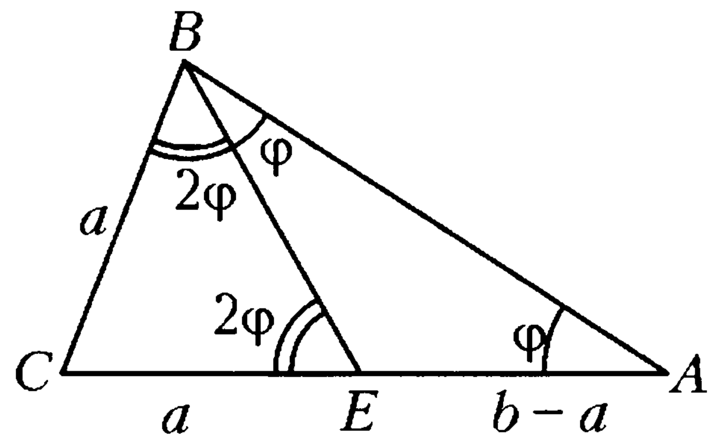
In triangle BCE, we know the lengths of all three sides, so it can be constructed with a compass and a straightedge. After that, on the extension of side CE, we mark off segment EA = b - a with a compass. Triangle ABC is the desired one.
Indeed, it obviously has BC = a and AC = b. Let’s prove that \(\angle ABC = 3\angle BAC\). Triangle ABE is isosceles, so \(\angle AEB = \angle EAB = \angle BAC\). …
The problem has a solution when a triangle can be constructed from segments a, a, and b, i.e., when 3a > b > a. Under this condition, the solution is unique.
The text of the solution written above consists of four paragraphs. They can be titled as follows: (1) analysis, (2) construction, (3) proof, (4) investigation. Usually, solutions to construction problems are formatted this way.
Problem 3-4. The locus of centers of circles of a given radius r tangent to a given line is a pair of lines \(l_1\) and \(l_2\) parallel to this line, passing at a distance r from it.
Let O be the center of the given circle with radius R. Then the locus of centers of circles of radius r tangent to the given circle is: 1) two circles with radii R + r and R 2) a circle with radius R + r centered at point O and the point O itself if R = r; 3) a circle with radius R + r centered at point O if R < r.
The center of the desired circle belongs to the intersection of these two loci. Since the intersection of two parallel lines with two circles can consist of at most 8 points, the number of solutions to problem 3-4 can range from 0 to 8 (check that all these cases are possible).
Problem 3-4 was solved by us using the method of loci. It consists of the following. Let the point X that needs to be constructed be determined by two conditions arising from the requirements of the problem. First, the locus of points satisfying only one of the conditions is found. Then the locus of points satisfying only the second condition is found. The common points of these two sets satisfy both conditions - these are the desired points X.
Problem 3-4 reduces to constructing the center X of the circle. We have identified two conditions: 1) X is at a distance r from the given circle and 2) X is at a distance r from the given line. Having found the loci of points satisfying each of these conditions, we determined the possible positions of point X.
Problem 3-5. Since the desired circle must be tangent to the parallel lines \(l\) and \(m\), its center K lies on a line parallel to these lines and passing midway between them. The radius R of this circle is thus equal to half the distance between lines \(l\) and \(m\). On the other hand, the desired circle must be tangent to the given circle, which means that its center K must be at a distance R + r or R - r (if R > r) from point O. Thus, point K must lie on one of the circles with center O and radii R + r and R - r. The construction can be carried out as follows. Construct a line passing midway between \(l\) and \(m\), and then construct two circles with center O and radii R + r and R - r (if R > r). Point K will be one of the intersection points of the line with the circles.
This problem is closely related to the famous problem of Apollonius (around 200 BC): given three circles, it is required to draw a fourth circle tangent to the three given ones. It turns out that this difficult problem can be reduced to problem 3-5 using the inversion transformation.
For definiteness, we will assume that the given circles are located outside each other. If we increase their radii by the same value, then the center of the circle tangent to them will remain in place. Let’s increase the radii so that two of the given circles touch each other. After that, we perform an inversion of the entire plane (see the commentary to problem 3-2) with respect to some circle centered at the point of tangency of the two given circles. These circles will then transform into two parallel lines, and the third one…
Having solved problem 3-5 for these lines and the circle, having constructed the image of point K under the inverse inversion and having performed a “compression” of the circles, we will obtain the desired circle in Apollonius’ problem.
Problem 3-6. Draw line OF and mark some point N on ray OA. Drop the perpendicular NK from point N to line OB. Draw a circle with center N and radius NK. Let L be one of the intersection points of this circle with ray OF. Draw a line through point F parallel to NL. The point M of intersection of this line with ray OA will be the desired one - see Figure 18.
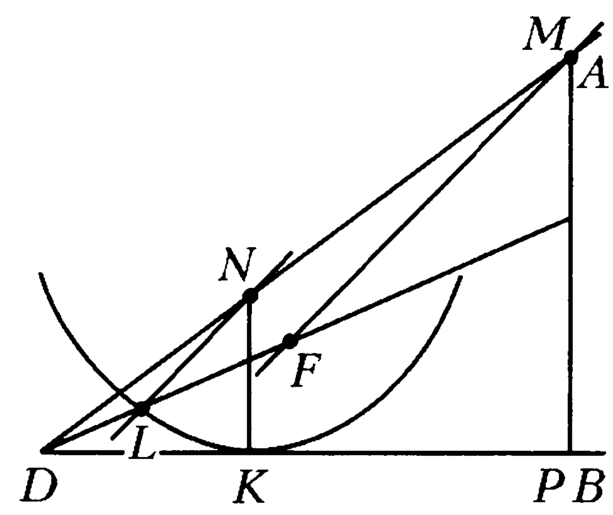
Indeed, the homothety with center O that maps point L to point F maps, due to the parallelism of the corresponding lines, point N to point M, point K to point P (the base of the perpendicular dropped from point M to OB). Thus, from the equality NK = NL follows the equality MF = MP.
The problem has two solutions (during the construction, the circle with center N and radius NK will intersect ray OA at two points).
Problem 3-6 was solved by us using the method of similarity. It generally consists of the following. First, a figure similar to the desired one is constructed, and then it is enlarged (or reduced) in the desired ratio.
In problem 3-6, we first constructed the broken line KNL, for which the condition of the problem is satisfied, and then we constructed a similar broken line PMF passing through point F.
Let’s try to apply the method of loci (see the commentary to problem 3-4) to the solution of problem 3-6. It turns out that the locus of points equidistant from a given point F and a given line OB is a parabola. coordinate system Oxy so that the Ox axis coincides with line OB and the Oy axis passes through point F. Then the points (x, y) that are equidistant from point F and line OB must satisfy the equation
\(|y| = \sqrt{x^2 + (y - h)^2}\)
Squaring both sides, we get the equation of a parabola: \(y = x^2/2h + h/2\).
Thus, the desired points in problem 3-6 are the intersection points of the parabola and line OA. Of course, we cannot construct the entire parabola with a compass and a straightedge, but its intersection points with a given line, according to problem 3-6, are easy to construct.
Problem 3-7. 1) Construct a right angle and mark off segments of length 1 on its sides from the vertex. The segment connecting their ends has length \(\sqrt{2}\).
- Mark off a segment AB of length \(1 + \sqrt{2}\) on a line, and then a segment BC of length 1 - see Figure 19.
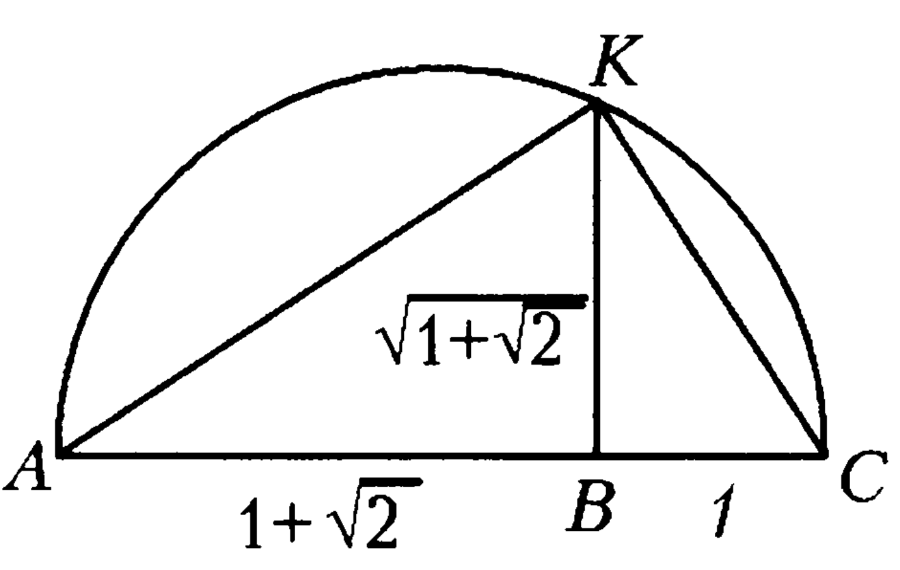
Construct a circle on segment AC as a diameter.
Draw a line through point B perpendicular to diameter AC. Let K be one of the intersection points of the last line with the circle. Let’s prove that BK = \(\sqrt{1 + \sqrt{2}}\). Indeed, triangle AKC is a right triangle since angle AKC is an inscribed angle subtended by the diameter. The square of the altitude of a right triangle dropped onto the hypotenuse is equal to the product of the segments into which this altitude divides the hypotenuse, i.e., \((1 + \sqrt{2}) \cdot 1\).
In this problem, we showed how to construct segments \(\sqrt{a^2 + b^2}\) and \(\sqrt{ab}\) from given segments a and b. Using the theorem on parallel lines intersecting the sides of an angle, it is possible to construct a segment ab/c from given segments a, b, and c.
By combining these constructions, many other segments can be constructed. For example, a segment of length \(\sqrt{ab + cd}\) can be constructed as follows: construct segments of length m = \(\sqrt{4ab}\) and n = \(\sqrt{4cd}\), and then a segment of length \(\sqrt{m^2 + n^2}\).
It turns out that from a given segment of length 1, it is possible to construct only those segments whose lengths are expressed by rational (arithmetic) operations and repeated extraction of square roots.
For experts. The lengths of all such segments form a field. The solvability of problem 3-7 follows from the fact that the number \(\sqrt{1 + \sqrt{2}}\) belongs to this field. The unsolvability of the classical problem of doubling the cube follows from the fact that the number \(\sqrt[3]{2}\) does not belong to this field (see [98]).
Problem 3-8. Mark off segments OA and OB of length 1 on the given line \(l\), and from the same point O, two more segments OK and OL of length 1 (points K and L lie on the same side of the line; see Figure 20). Let C be the intersection point of lines AK and BL, and H be the intersection point of lines AL and BK. Then line CH will be the desired perpendicular to line \(l\).
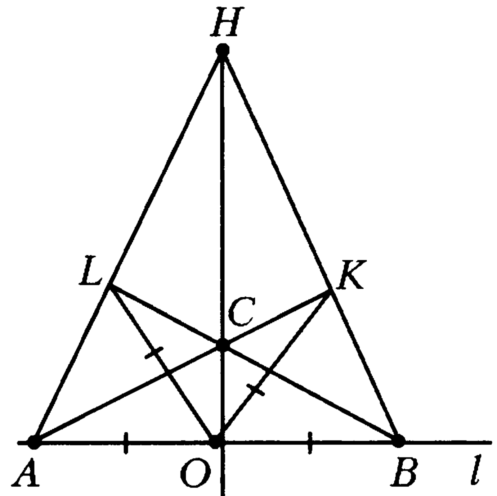
To prove this, we need to use two theorems: 1) if in a triangle the median drawn to the base is equal to half its length, then the angle at the vertex is a right angle; 2) in a triangle, the three altitudes intersect at one point.
In problem 3-8, we were talking about constructions with an unusual set of tools: a straightedge and a unit length. As you can see, with their help, it is possible to solve many standard construction problems: draw a line through a given point parallel or perpendicular to a given line, mark off a given segment on a given line, and mark off a given angle in any direction from a given ray.
However, not everything that can be constructed with a compass and a straightedge can be constructed with a straightedge and a unit length. For example, it is impossible to construct, starting from a segment of length 1, a segment of length \(\sqrt{1 + \sqrt{2}}\) (compare with problem 3-7); moreover, in the general case, it is impossible to construct even a right triangle from a given leg and hypotenuse.
It turns out that, starting from a segment of length 1, it is possible to construct only those segments whose lengths are expressed by rational operations and extraction of square roots from sums of squares of lengths of already constructed segments (in other words, expressions for lengths must remain real for all possible changes of sign in front of all radicals, see [90]).
Problem 3-9. Answer: 1/7. Let M, N, and P be the intersection points of the given line with sides OA, OB, and diagonal OC, respectively - see Figure 21. Let’s perform the following constructions, which will allow us to represent all the necessary ratios as ratios of segments of diagonal OC.
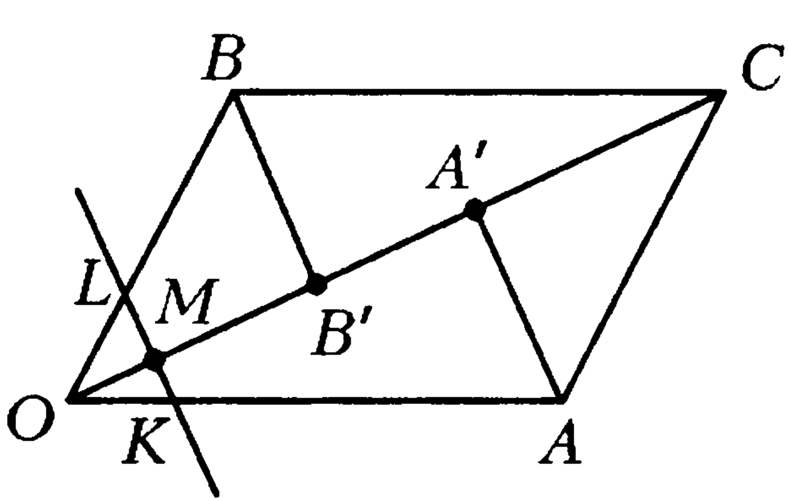
Draw segments BB’ and AA’ parallel to the given line, where B’ and A’ are points on diagonal OC. Then triangles OBB’ and CAA’ are equal (they are symmetric with respect to the center of the parallelogram), so OB’ = CA’. From the equalities 3 = OB : OL = OB’ : OM, 4 = OA : OK = OA’ : OM, OC = OB’ + OA’, we get:
OC : OM = 3 + 4 = 7.
Similarly, it can be shown that a line that cuts off 1/A and 1/μ parts from the sides of a parallelogram, respectively, cuts off a 1/(A + μ) part from the diagonal.
Based on this fact, it is possible to prove an important inequality for the norm of a vector defined as follows (see [80]). Let Φ be a bounded closed set with a center of symmetry O (an interior point of Φ - see Figure 22). For each vector a = OA, let ||a|| be equal to the ratio OA/OL, where L is the intersection point of the ray OA with the boundary of the figure Φ.
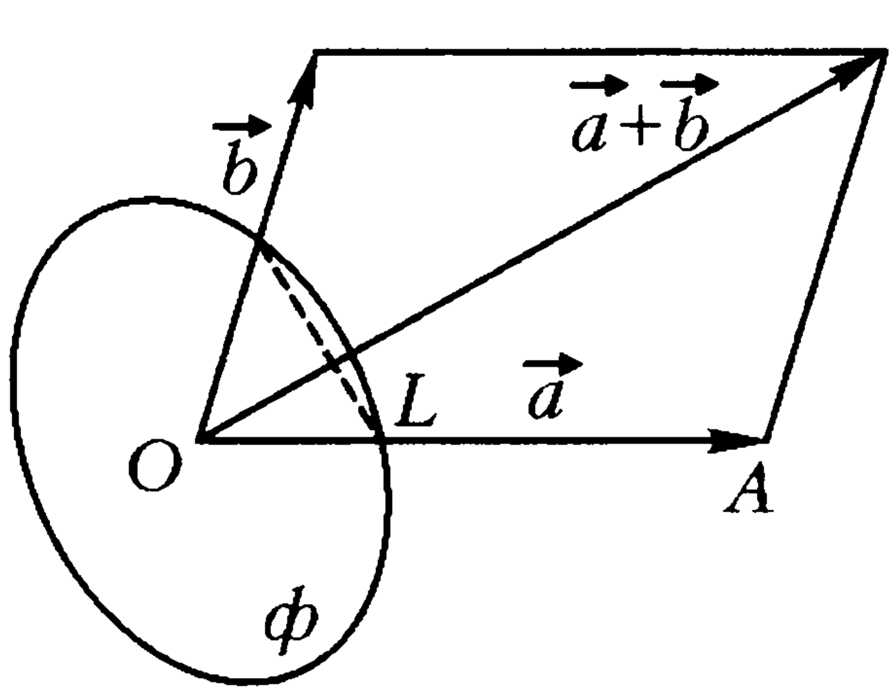
Then if Φ is convex, the “triangle inequality” holds:
||a + b|| ≤ ||a|| + ||b||
In particular, if Φ is a circle of radius 1 centered at O in the Oxy plane, then \(\sqrt{(x_1 + x_2)^2 + (y_1 + y_2)^2} ≤ \sqrt{x_1^2 + y_1^2} + \sqrt{x_2^2 + y_2^2}\) - this is the usual triangle inequality for vectors \((x_1, y_1)\) and \((x_2, y_2)\).
Problem 3-10. It is sufficient to draw (not counting the two given) 9 lines (in Figure 23, the lines are numbered in the order of their appearance). Let’s prove that in this figure, AH = BH = AB/2.
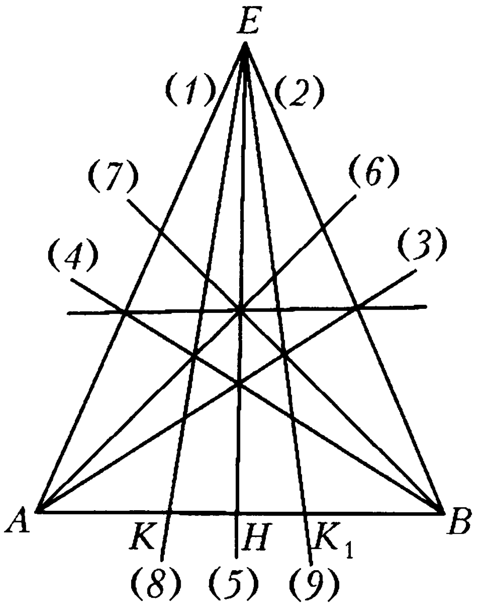
Segment CD can be obtained from AB by homothety with center E and with center F; under both homotheties, point H goes to G (see Figure 24).
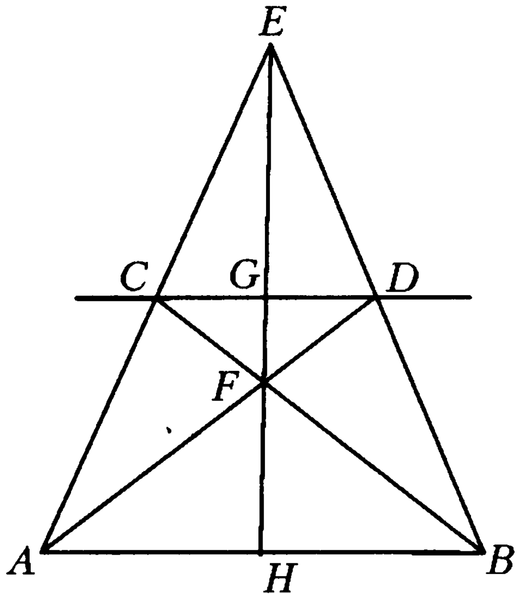
Therefore,
CG/AH = EC/EA = CD/AB = FC/FB = CG/BH
from which AH = BH.
Segment CG can be obtained from segment AH by homothety with center E and from AB by homothety with center M (see Figure 25). Under both homotheties, point L goes to point K.
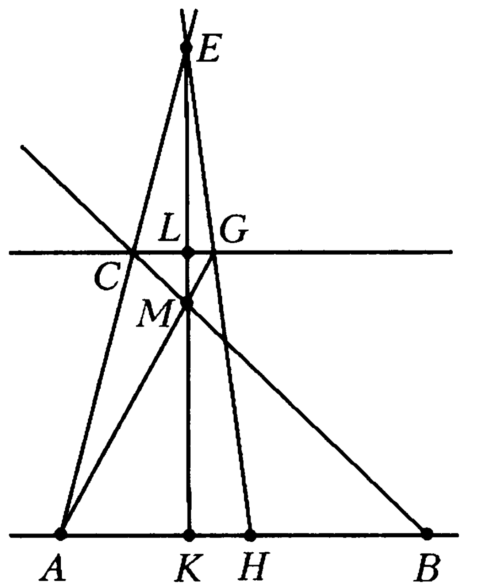
Since 2AH = AB,
CL/AK = EC/EA = CG/AH = 2CG/AB = 2CM/MB = 2CL/BK
from which 2AK = BK, i.e., AK = AB/3. Similarly, it is proved that in Figure 24, BK’ = AB/3, i.e., AK = KK’ = K’B.
We can act in the same way further (drawing line AL and so on) to divide segment AB into n equal parts for any natural n.
Let us also note the connection of this problem, which deals with the ratio of segments in a trapezoid, with the previous one, which studied the ratio of segments in a parallelogram (see Figure 26, a). The line passing through the vertex B’ of parallelogram A’B’C’D’ and the midpoint H’ of its side A’D’ cuts off segment A’M’ = A’C’/3 from its diagonal A’C’.
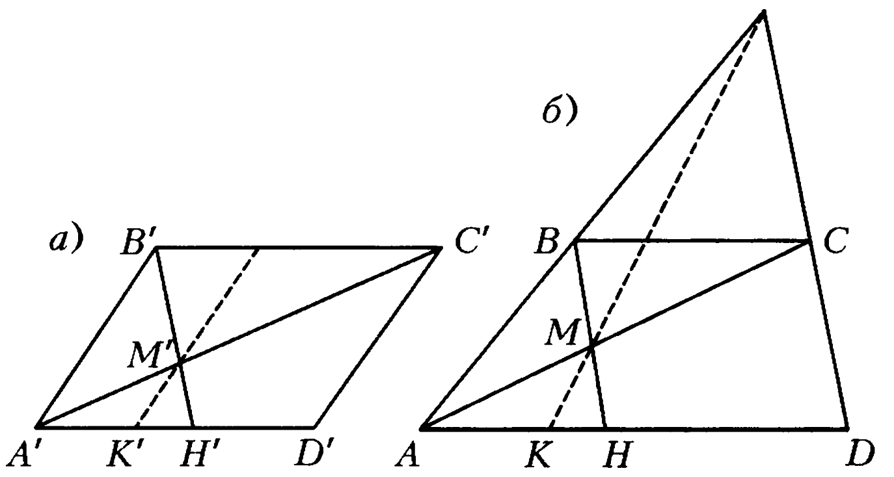
The line passing through point M’ and parallel to side A’B’ also cuts off 1/3 from sides B’C’ and A’D’. Figures 26, a and 26, b, as we see, are very similar. We will discuss the reason for the analogy between them in the commentary to problem 3-20.
Problem 3-11. To solve the problem, let’s make an additional construction: draw diagonals in all quadrilaterals, as shown in Figure 27, a. Let the areas of the outermost shaded triangles in Figure 27, a be \(x\) and \(y\), respectively. Then the area of the middle triangle is \((x + y)/2\). Indeed, their bases are the same, and the height of the middle triangle is equal to half the sum of the heights of the outermost triangles (this follows from the fact that the height of the middle triangle is the midline of the trapezoid whose bases are the heights - see Figure 27, b).
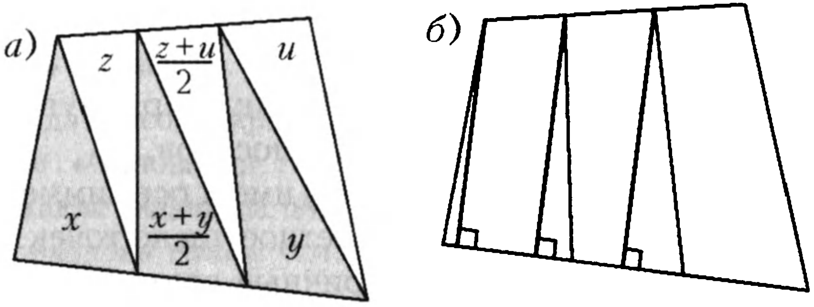
The same reasoning can be carried out for the three unshaded triangles in Figure 27, a. So, the area of the entire quadrilateral is \(3(x + y + z + u)/2\), and the area of the part of the quadrilateral enclosed between the lines is \((x + y + z + u)/2\), i.e., 3 times smaller.
A more general statement is also true. If several lines divide each of two opposite sides of a quadrilateral into equal parts, then the areas of the quadrilaterals into which they divide the given quadrilateral form an arithmetic progression. If the other two opposite sides of the given quadrilateral are also divided into equal parts and the corresponding lines are drawn so that a grid of small cells appears inside the quadrilateral - see Figure 28 - then each segment with endpoints on opposite sides of the quadrilateral will be divided by the intersection points into equal parts, and thus the areas of the cells in each row in one and the other direction will form an arithmetic progression.
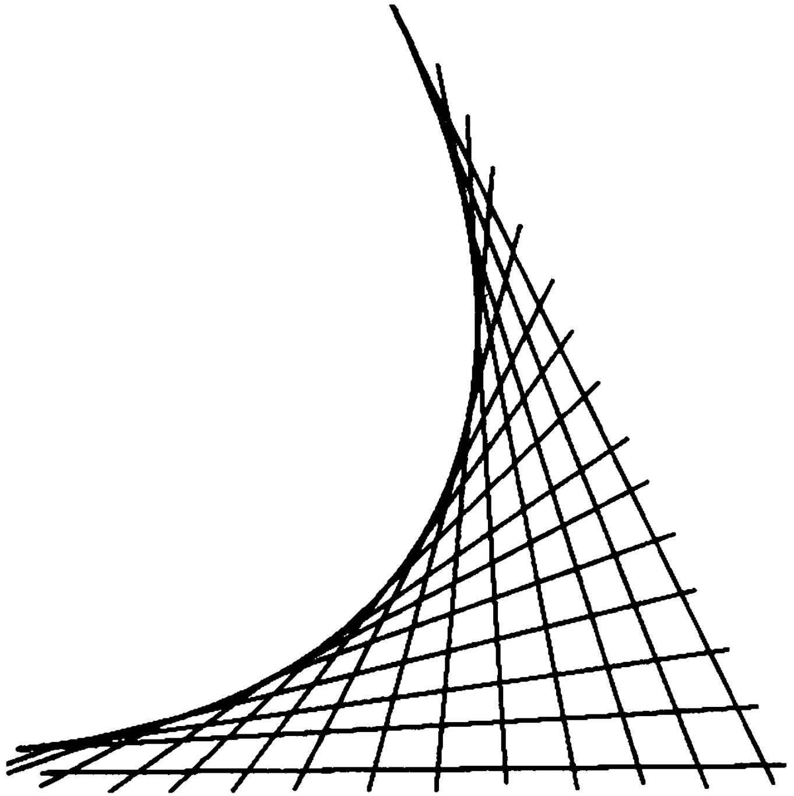
It is curious that all the lines drawn in the figure are tangent to some parabola - see Figure 28.
If we imagine that the original quadrilateral is made up of hinged rods, then when it is bent in space, the corresponding lines will still intersect - they lie on a saddle-shaped surface “woven” from two families of lines.
Problem 3-12. Answer: if the triangle is not right-angled, then there are 7 ways; if it is right-angled, then there are 6 ways. Let the set of points \({A, B, C, D}\) have an axis of symmetry. Only an even number of points can lie outside the axis of symmetry, otherwise they cannot be divided into mutually symmetric pairs. Since all 4 points cannot lie on the axis (points A, B, and C do not lie on the same line), we need to consider two cases.
There are no points of our set on the axis. Then the axis is the perpendicular bisector of one of the sides of triangle ABC, and point D is symmetric to the vertex opposite this side. Thus, we get 3 ways to position point D - points \(D_1, D_2, D_3\) in Figure 29; if \(\angle C = 90^\circ\), then the perpendicular bisectors of the legs AC and BC give us the same point \(D = D_2\), since these perpendicular bisectors are the axes of symmetry of rectangle ACBD.
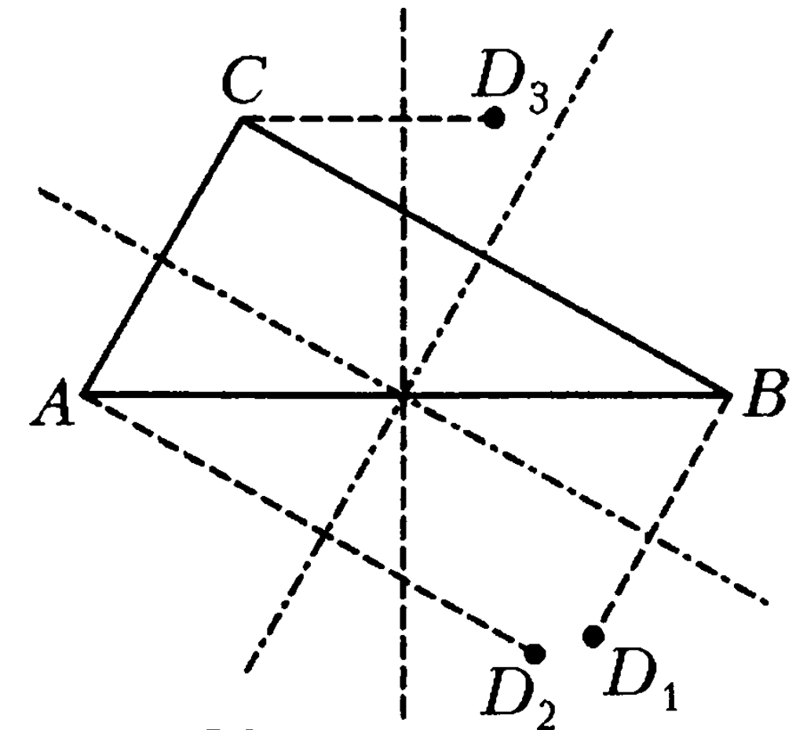
- There are 2 points on the axis. Then the axis of symmetry passes through two of the points A, B, C, and point D is symmetric to the third of these points with respect to the axis. This gives us 3 more ways - see Figure 30. No other coincidences of two of the six constructed points, except for the one considered in item 1), are possible for a non-isosceles triangle.
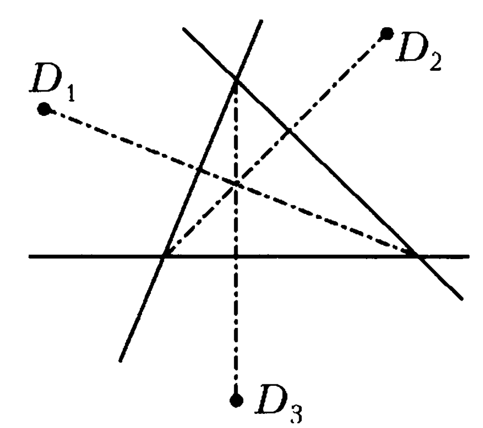
Problem 3-13. Construct a circle with diameter AM (Figure 31). Since angles APM and AQM are right angles, points P and Q lie on this circle; \(\angle MAQ = \angle QPM\) (since these are inscribed angles subtended by the same arc). Also note that \(\angle PAK = \angle QPM\). Indeed, \(\angle PAK = 90^\circ - \angle APK\) (AK is perpendicular to PQ) and \(\angle QPM = 90^\circ - \angle APK\) (MP is perpendicular to AP). From this, \(\angle MAQ = \angle PAK\), which is what we needed to prove.
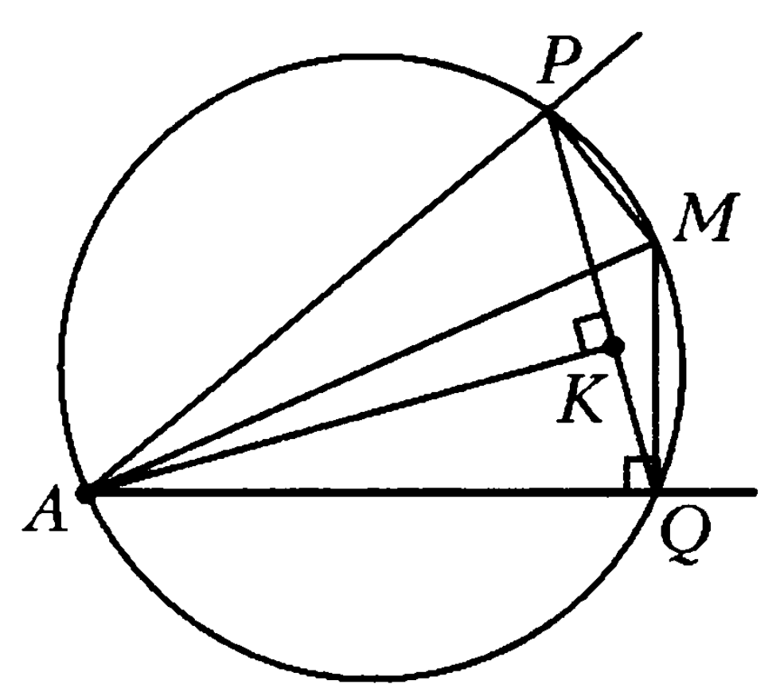
This problem was repeatedly used by D. Hilbert in his famous book “Foundations of Geometry,” in particular, to find out which construction problems can be solved using only a straightedge and a unit length (see the discussion of problem 3-8 and [90]).
Problem 3-14. Let’s calculate the side of a regular decagon given the radius of the circumscribed circle. To do this, consider the isosceles triangle AOB, where O is the center of the regular decagon, and AB is one of its sides (see Figure 32). Then \(\angle AOB = 36^\circ\) and \(\angle OAB = 72^\circ\). Draw the bisector AX of angle OAB. Since triangles OBXA and BXAB are isosceles, then AB = AX = OBX. Let OA = 1, AB = \(x\); from the similarity of triangles AOB and BXAB, the proportion follows:
\(x/(1 - x) = 1/x\)
Solving the resulting equation, we find its positive root \(x = (\sqrt{5} - 1)/2\) (see problem 3-7). Next, draw a circle of radius 1 and successively mark off on it with a compass with a radius of \((\sqrt{5} - 1)/2\) all the vertices of the regular decagon one after another. We can construct a segment of such length.
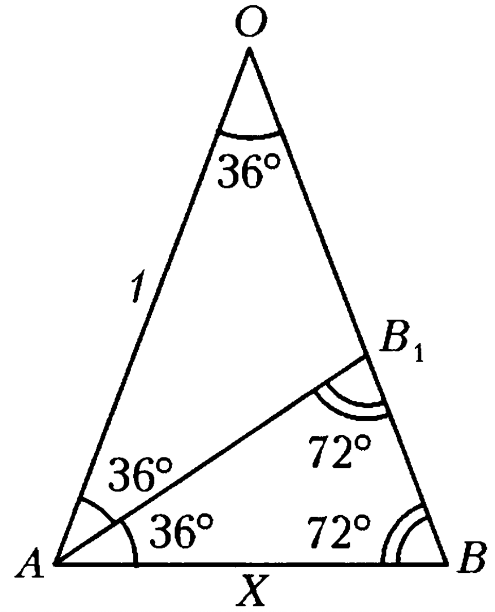
The number \(x = (\sqrt{5} - 1)/2\) often appears in various problems. For example, \(\sin 18^\circ = x/2 = (\sqrt{5} - 1)/4\). The number \(\tau = 1/x = (\sqrt{5} + 1)/2\) has been known since ancient times - it corresponds to the “golden ratio”: if a segment is divided in this ratio \(\tau\), then the ratio of the segment to its larger part will be equal to the ratio of the larger part to the smaller one. This number also arises in connection with the Fibonacci numbers (see problems 6-11, 6-16, and 6-17).
For experts. The possibility of constructing a regular \(n\)-gon is determined by whether the number \(\sin(180^\circ/n)\) belongs to the field of numbers described in the commentary to problem 3-7. As shown by C.F. Gauss, a regular \(n\)-gon can be constructed if and only if \(n = 2^k p_1 p_2 ... p_m\), where \(p_1, p_2, ..., p_m\) are distinct prime numbers of the form \(2^{2^l} + 1\). The condition that distinguishes such numbers \(n\) is equivalent to the following: the value of Euler’s totient function \(\phi(n)\) (see the commentary to problem 2-8) is a power of two, i.e., \(\phi(n) = 2^k\). For example, \(\phi(10)\), the number of integers relatively prime to 10, is equal to \(4 = 2^2\).
The origin of the condition \(\phi(n) = 2^k\) can be explained approximately as follows. When constructing with a compass and a straightedge, the number of points obtained each time we find the intersection points of two circles and the intersection points of a line and a circle doubles. Therefore, as a result, we generally get \(2^l\) solutions. Now, let’s assume that we have found an algorithm for constructing a regular ( n )-gon. Using this algorithm, we can not only construct the regular ( n )-gon, but also any of the regular closed ( n )-sided polygons (see problem 2-8). The number of such polygons is ( ), which implies that ( (n) ) (Euler’s totient function) must be a power of two. The necessity and sufficiency of this condition are proved algebraically (see [31, 51]).
Problem 3-15. a) Two adjacent lines pass through point A of the circle and form an angle inscribed in the circle and subtended by an arc of \(30^\circ\). According to the inscribed angle theorem, this angle is measured by half the arc on which it is subtended, i.e., \(15^\circ\), which proves the required statement.
- Consider the point M of intersection of some line of the first pencil with some line of the second pencil. Draw a circle through this point, as well as through points A and B (in Figure 33, it is shown by black dots). Now consider the point N of intersection of the lines adjacent to the taken lines (for example, clockwise). Then angles AMB and ANB are equal, since the sums of the angles at the vertices A and B of triangles AMB and ANB are the same (angle MAB is \(15^\circ\) greater than angle NAB, and angle NBA is \(15^\circ\) greater than angle MBA).
Since angles AMB and ANB are equal, points A, M, N, and B lie on the same circle.
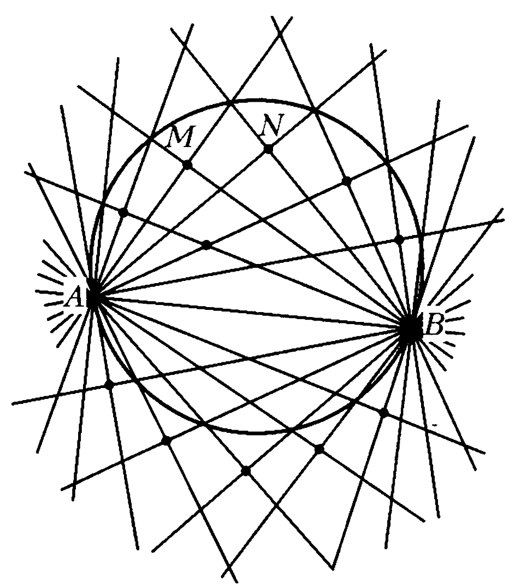
The fact established in problem 3-15 b) is well explained in the language of “motions.” If a line rotates uniformly with angular velocity \(\omega\) around point A of the circle, then, according to the inscribed angle theorem, its other intersection point with the circle moves uniformly along the circle with angular velocity \(2\omega\).
If two intersecting lines \(l_A\) and \(l_B\) rotate in the plane around their two points A and B with the same angular velocity \(\omega\), then the trajectory of the intersection point of these lines is a circle. Indeed, let’s construct a circle \(\gamma\) passing through three points: A, B, and the point M of intersection of the lines at some point in time. On the one hand, the intersection point of line \(l_A\) with circle \(\gamma\) moves along circle \(\gamma\) uniformly with angular velocity \(2\omega\), and on the other hand, the intersection point of line \(l_B\) with the same circle \(\gamma\) moves in the same way. But since at some point in time the intersection points of lines \(l_A\) and \(l_B\) with circle \(\gamma\) were at the same point of circle \(\gamma\), then for all other times of rotation of the lines, the points of their intersection will be on this circle.
For experts. The 23 drawn lines form a grid. If we color the cells of this grid in a checkerboard pattern, we will see a family of circles passing through points A and B, and a family of hyperbolas (the picture will be more visual if we take pencils of 24 lines instead of 12 at points A and B).
Hyperbolas arise here due to the following circumstance. If lines \(l_A\) and \(l_B\) rotate around their points A and B, one with angular velocity \(\omega\) and the other with angular velocity \((-\omega)\) (in different directions), then their intersection point moves along a hyperbola.
Indeed, there will be a moment in time when the lines \(l_A\) and \(l_B\) under consideration are parallel. Let’s choose a coordinate system with the origin in the middle of segment AB, and direct the Ox axis parallel to lines \(l_A\) and \(l_B\).
Let the coordinates of point A be \((a, b)\), then the coordinates of point B are \((-a, -b)\). At time \(t\), the equations of the lines can be written as:
\(x \sin(\omega t) - y \cos(\omega t) = a \sin(\omega t) - b \cos(\omega t)\) \(x \sin(\omega t) + y \cos(\omega t) = -a \sin(\omega t) - b \cos(\omega t)\)
The coordinates of their intersection point are \(x = -b \cot(\omega t)\), \(y = -a \tan(\omega t)\).
Therefore, \(xy = ab\), i.e., the intersection points of the lines lie on a hyperbola (see [16]).
Problem 3-16. We will reflect not the ball, but the rectangular billiard table itself from the walls. After all possible multiple reflections of the rectangle with respect to its sides (it is most convenient to do this on graph paper), we will obtain a grid of rectangles folded like an “accordion” (Fig. 34).
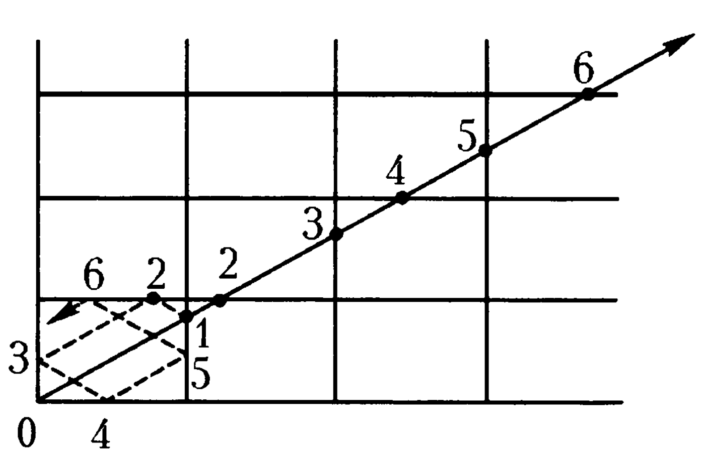
Now let’s prove that a line drawn through a node O of the grid at an angle of \(30^\circ\) to the wall of the billiard table does not pass through other nodes. This will imply the statement of the problem.
If the ball had passed through any other node, a right triangle with a 30° angle would have been formed, whose legs have integer lengths. But \(\tan(30°) = \frac{1}{\sqrt{3}}\) (an irrational number) cannot be equal to the ratio of two integers.
For experts: The trajectory of the ball in problem 3-16 will “densely sweep” the entire billiard table, although its direction will always be at an angle of 30° with one of the sides. If the billiard table has the shape of a circle or an ellipse, the trajectory of the ball will no longer be everywhere dense - there will be areas where it does not enter. In general, the behavior of a typical ball trajectory in a billiard table on a plane or in a multidimensional space strongly depends on the shape of the billiard table. For billiard tables, all sides of which are convex inward, ergodicity has been proven: a typical ball trajectory is everywhere dense in the phase space, it passes arbitrarily close to any point of the billiard table, and in various directions. It is to such problems about scattering billiards that some mathematical models of a gas of solid colliding “atoms” are reduced. Convex billiards, in particular billiards with straight walls, as a rule, do not have this property, and it was possible to describe the trajectories in such billiards only in special cases (see [110, 111]).
Problem 3-17. a) Answer: they can.
An example is shown in Figure 35. b) Answer: they cannot.
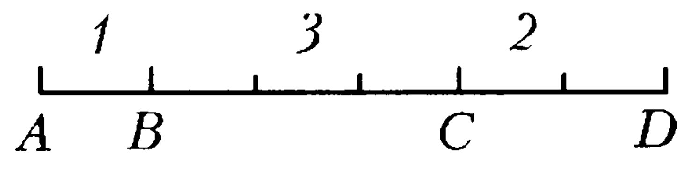
Consider three points, all pairwise distances between which are equal to 1 cm. They form an equilateral triangle with a side length of 1 cm. The distances from the fourth point to some two of them are equal to 1 cm, therefore the fourth point with these two also forms an equilateral triangle. Therefore, all four points must form a rhombus with a side length of 1 cm (see Figure 36). But then the length of the longer diagonal of this rhombus, which is equal to \(\sqrt{3}\) cm, and \(1.8 \times \sqrt{3}\).
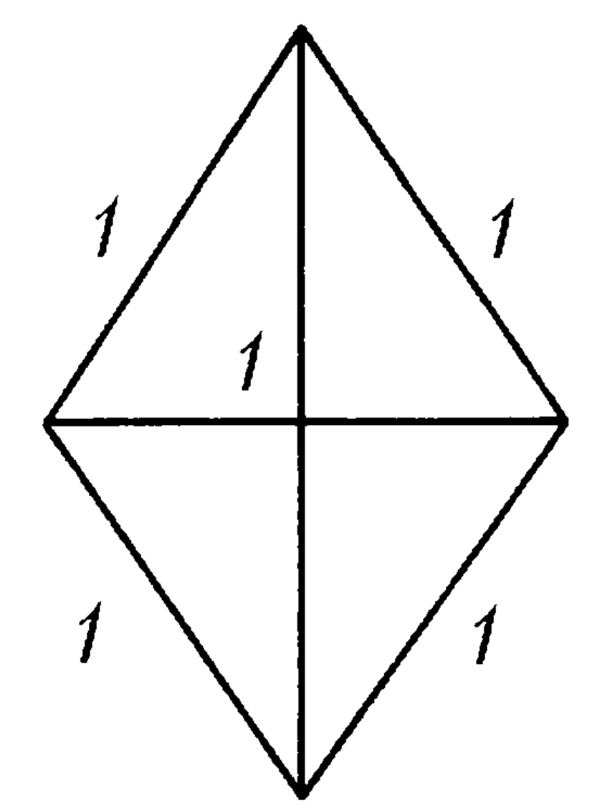
Let’s generalize this problem as follows.
For what values of \(a\) do there exist four points: a) on the plane; b) in space, the pairwise distances between which are equal to 1, 1, 1, 1, 1, \(a\)?
From the solution to problem 3-17, it is clear that the answer to question a) is: only for \(a = \sqrt{3}\). The same solution implies the answer to question b): for \(0 < a < \sqrt{3}\). Indeed, by bending the rhombus in space along its smaller diagonal, we see that the distance between its opposite vertices can vary from \(\sqrt{3}\) to 0.
For experts: Let’s make one more observation: for \(\sqrt{3} < a < 2\), the triangle inequalities (the length of the larger side does not exceed the sum of the lengths of the other two) are satisfied for any three of these four points, however, in space (and even in \(n\)-dimensional Euclidean space) there are no four points with such pairwise distances.
A more general question can be posed: is it possible to arrange a) on the plane; b) in space four points 1, 2, 3, 4 so that the pairwise distances between them are equal to the given numbers \(r_{12}\), \(r_{13}\), \(r_{14}\), \(r_{23}\), \(r_{24}\), \(r_{34}\) (where \(r_{ij}\) is the distance between points \(i\) and \(j\))? Of course, all numbers \(r_{ij}\) must be non-negative and satisfy the triangle inequalities \(r_{ij} + r_{jk} > r_{ik}\). But this is not enough.
\[\Delta_4 = \begin{vmatrix} 0 & r_{12}^2 & r_{13}^2 & r_{14}^2 & 1 \\ r_{12}^2 & 0 & r_{23}^2 & r_{24}^2 & 1 \\ r_{13}^2 & r_{23}^2 & 0 & r_{34}^2 & 1 \\ r_{14}^2 & r_{24}^2 & r_{34}^2 & 0 & 1 \\ 1 & 1 & 1 & 1 & 0 \end{vmatrix}\]
For an affirmative answer to question b), it is necessary and sufficient that the determinant \(\Delta_4\) be non-negative, and for the possibility of placement on a plane (question a)), the determinant \(\Delta_4\) must equal 0.
If four points 1, 2, 3, 4 are placed in space, then
\(\Delta_4 = 288V^2\), where \(V\) is the volume of the tetrahedron with vertices at these points. From this, it is clear that the condition \(\Delta_4 > 0\) is necessary for the possibility of placing points in space.
Let’s explain why the conditions \(\Delta_4 > 0\) + \(r_{ij} > 0\) are sufficient for this. If we fix all distances except \(r_{34}\), then triangles 123 and 124 can be rotated around the common edge 12 (the dihedral angle \(\phi\) between them varies from 0° to 180°). Then \(\Delta_4\) as a function of \(x = r_{34}\) will be a quadratic trinomial with a negative leading coefficient. Its roots correspond to those values of \(x\) for which the triangles lie in one plane (\(\phi = 0°\) and \(\phi = 180°\)). When \(\phi\) changes from 0° to 180°, the value of \(x\) runs through all values between the roots, i.e., all values for which \(\Delta_4(x) > 0\).
By the way, we note that in a similar way, using a determinant, we can write Heron’s formula for the area \(S\) of a triangle with sides \(r_{12}\), \(r_{13}\), \(r_{23}\):
\(S^2 = \Delta_3 / (2^2(2!)^2) = \Delta_3 / 16\),
where \[\Delta_3 = \begin{vmatrix} 0 & r_{12}^2 & r_{13}^2 & 1 \\ r_{12}^2 & 0 & r_{23}^2 & 1 \\ r_{13}^2 & r_{23}^2 & 0 & 1 \\ 1 & 1 & 1 & 0 \end{vmatrix} \text{ (see [83, 86]).}\]
Problem 3-18. Answer: 5, 8, 9, 10, or 11.
Figure 37 shows examples of division into 5, 8, 9, 10, 11 parts. We will prove that there cannot be a different number of parts.
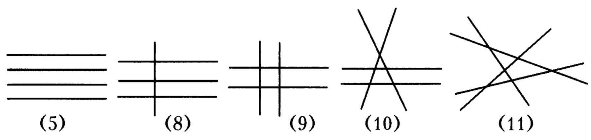
If all lines are parallel to each other, then there are five parts.
Suppose not all lines are parallel. Consider a pair of intersecting lines - they divide the plane into 4 angles. Each newly drawn line intersects at least two parts into which the plane is divided by the already drawn lines, and divides each of these parts into two. Therefore, each subsequent line adds at least two new parts. In particular, four lines, among which there are non-parallel ones, divide the plane into at least \(4 + 2 \times 2 = 8\) parts.
Now we will prove that there are no more than eleven parts. We will draw the lines one by one. The first two lines divide the plane into no more than four parts. The third line has no more than two intersection points with the previous lines, is divided by them into no more than three parts, and therefore the number of parts increases by no more than three.
The fourth line is divided by the intersection points with the previous ones into no more than four parts and therefore adds no more than four new parts.
In total, we get no more than \(4 + 3 + 4 = 11\) parts.
This problem naturally generalizes: into how many parts can \(n\) different lines divide the plane?
Reasoning similar to what we did above, we can prove that the number of parts is either equal to \((n+1)\) or lies in the interval from \(2n\) to \((n^2 + n + 2)/2\). But, it turns out, not every number of parts in this interval can be realized. For example, 5 lines cannot divide the plane into \(2 \times 5 + 1 = 11\) parts and, in general, \(n\) lines for \(n > 5\) cannot divide the plane into \((2n + 1)\) parts. It would be interesting to find out which numbers from the interval from \(2n\) to \((n^2 + n + 2)/2\) can be realized for \(n\) lines.
The question of what kind of regions \(n\) lines in general position (no three of which pass through one point and no two are parallel) divide the plane into is also interesting. For \(n = 4\), the arrangement of lines in general position will always be as in Figure 37, i.e., among the three finite regions there is always one quadrilateral, two triangles, among the eight infinite ones there are four “infinite” triangles and one “infinite” quadrilateral. For \(n > 5\), different cases (by the number of triangles and other regions) are already possible.
The problem of estimating the maximum number of triangles in the partition of the plane by \(n\) lines is essentially equivalent to the following problem by V.I. Arnold: let all \(a_n = (n^2 + n + 2)/2\) regions of the partition be colored with two colors - black and white - so that neighboring regions (bordering along a line segment or a ray) are colored in different colors, and the number of black regions is equal to \(b_n\). What is the largest value that the ratio \(b_n/a_n\) can take?
It can be proved (using, for example, Euler’s theorem - see problem 5-15) that \(b_n/a_n < 2/3\) (for any \(n\)), and in the partition with the largest number of black regions, all (or almost all) of them must be triangles.
Interesting facts are contained in the article [127]. See also [128], [129].
Problem 3-19. Answer: 4 planes divide space into 14 parts, 5 planes divide space into 22 parts.
Let’s prove this. Three planes \(\alpha_1\), \(\alpha_2\), \(\alpha_3\) divide space into 8 parts. When we draw the fourth plane \(\alpha_4\), it intersects the three previous ones along three lines passing through their common point. These lines divide the plane \(\alpha_4\) into 6 angles. Consequently, out of the 8 parts into which space was divided by the planes \(\alpha_1\), \(\alpha_2\), \(\alpha_3\), the fourth plane \(\alpha_4\) intersects 6 parts and divides each of them into 2 parts. Thus, another 6 parts are added, for a total of \(8 + 6 = 14\).
Similarly, the fifth plane, intersecting the previous ones along four lines, adds \(4 \times 2 = 8\) parts, and there become \(14 + 8 = 22\).
In the general case, for \(n\) planes, the proof can be carried out similarly: the 6th, 7th, …, \(n\)th planes add, respectively, \(2 \times 5\), \(2 \times 6\), …, \(2(n-1)\) new parts, and the total number of parts becomes (it is convenient to write the sum starting from the first term) \[2 + 2 \times 1 + 2 \times 2 + ... + 2(n-1).\] To find this sum, it is convenient to add the numbers in pairs from different ends: \[2 + 2(n-1) + 2 \times 1 + 2(n-2) + ... + 2(\frac{n-1}{2}) + 2(\frac{n+1}{2}) = (1 + (n-1)) + (2 + (n-2)) + ... + ((\frac{n-1}{2}) + (\frac{n+1}{2})) = n \times \frac{n}{2} = \frac{n^2}{2}.\] \[2 + 2 \times 1 + 2 \times 2 + ... + 2(n-1) = 2 + 2 \times \frac{(n-1)n}{2} = n^2 - n + 2.\] Problem 3-19 can be reduced to the planar problem 3-18 as follows: draw planes near one of the \(n\) planes on both sides of it. Then each of these planes will be divided by the lines of intersection with the remaining \((n-1)\) of the given planes into \((1/2)((n-1)^2 + (n-1) + 2) = (n^2 - n + 2)/2\) parts (see the discussion of problem 3-18), and these \(n^2 - n + 2\) parts lie exactly one each in different regions of space.
The description of partitions of space by \(n\) planes passing through one point \(O\) is obviously equivalent to the description of partitions of a sphere with center \(O\) by great circles. For example, 5 great circles in general position always divide the sphere into 10 triangles, 10 quadrilaterals, and 2 pentagons.
For \(n > 6\), different types of partitions are possible (as in the previous problem 3-18 for \(n > 5\)) (see [130], [131]).
Problem 3-20. Let’s find the lines of intersection of the planes of opposite faces of the given tetrahedral angle. Through these two lines, we draw a plane \(\alpha\). Then we draw a plane \(\beta\) parallel to it, intersecting all four edges.
We will prove that the section is a parallelogram. The plane \(\beta\) is parallel to the line of intersection of the planes of two opposite faces, and therefore it intersects them along parallel lines. Thus, in the section, we obtained a quadrilateral whose opposite sides are pairwise parallel, i.e., a parallelogram.
Now let’s show how, using our construction, we can connect two problems 3-9 and 3-10 - see Figures 26, 38.
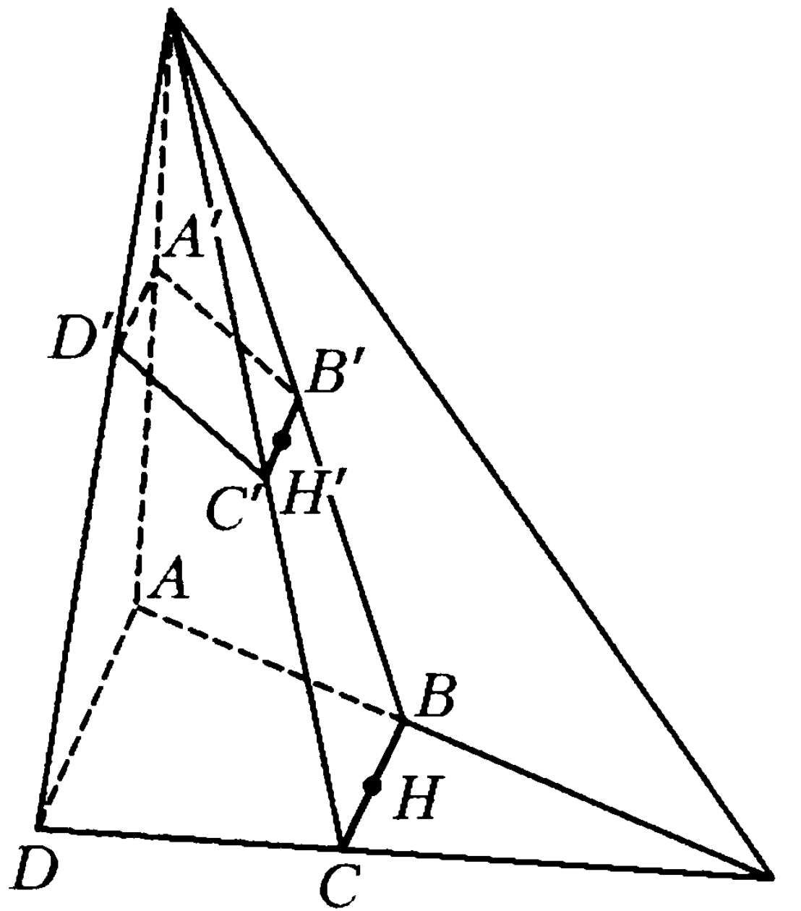
Consider a quadrangular pyramid whose base is a trapezoid. Let’s draw a section of this pyramid with a plane so that the section is a parallelogram. Two opposite sides of this parallelogram will be parallel to the bases of the trapezoid.
Under central projection (with the center at the vertex of the tetrahedral angle), the parallelogram goes into a trapezoid, and the ratio of segments on parallel lines is preserved.
Problem 3-21. Consider the unfolding of the lateral surface of the prism - see Figure 39.
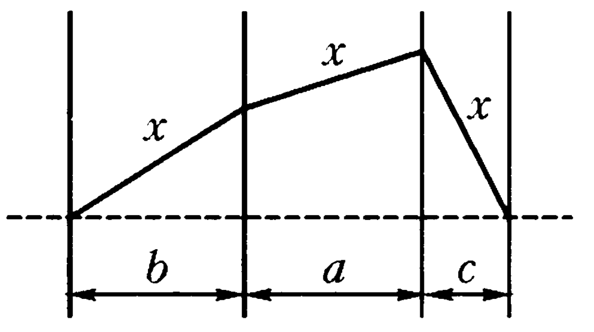
The existence of the desired section is equivalent to the existence of a broken line with vertices on the four parallel lines of the unfolding, such that all three of its segments have the same length \(x\), and the ends lie on a line perpendicular to these parallel lines. Thus, it is sufficient to prove that the equation \[\sqrt{x^2 - a^2} + \sqrt{x^2 - b^2} = \sqrt{x^2 - c^2} \quad (1)\] has a solution for \(a > b > c > 0\), \(a < b + c\). Consider the function \[f(x) = \sqrt{x^2 - a^2} + \sqrt{x^2 - b^2} - \sqrt{x^2 - c^2}.\] This function is defined for \(x^2 > a^2\) and is continuous. Note that \[f(a) = \sqrt{a^2 - b^2} - \sqrt{a^2 - c^2} < 0,\] since \(b > c\), and \[f(a+b) = \sqrt{(a+b)^2 - a^2} + \sqrt{(a+b)^2 - b^2} - \sqrt{(a+b)^2 - c^2} = \sqrt{2ab + b^2} + \sqrt{2ab + a^2} - \sqrt{a^2 + 2ab + b^2 - c^2} > 0.\] If the values of a continuous function at the ends of a segment have different signs, then at some point inside the segment the function becomes zero. In our case, these conditions are satisfied on the segment \([a, a+b]\). Therefore, at some point \(x_0\) inside this segment, the function \(f\) becomes zero: \(f(x_0) = 0\), and thus the equation has a solution.
By solving equation (1), we will find a formula with which the broken line can be constructed using a compass and ruler.
Explanation:
The problem deals with finding a specific type of section of a triangular prism. By unfolding the lateral surface of the prism, the problem is transformed into a geometric problem on a plane. The goal is to find a broken line with three equal segments connecting four parallel lines, with its endpoints lying on a line perpendicular to these parallel lines.
The proof uses the Intermediate Value Theorem. The function \(f(x)\) represents the difference between the sum of the lengths of the two shorter segments of the broken line and the length of the longest segment. By showing that \(f(a) < 0\) and \(f(a+b) > 0\), we demonstrate that there exists a value \(x_0\) within the interval \([a, a+b]\) where \(f(x_0) = 0\). This means that for this value \(x_0\), the sum of the lengths of the two shorter segments equals the length of the longest segment, satisfying the conditions for the desired section.
Finally, the note suggests that by solving equation (1) for \(x\), we can obtain a formula that allows us to construct the broken line (and therefore the section of the prism) using a compass and ruler, which is a classic problem in Euclidean geometry.
Problem 3-22. Answer: it can.
Let’s construct an example. Consider a triangular pyramid whose base is a regular triangle, the dihedral angles at the base are acute, and the lateral edges are different. From two copies of such a pyramid, gluing them along a common base, you can make a hexahedron (bipyramid) in three different ways - see Figure 40, a. All of them have the same set of faces, but are not equal to each other. Another example is shown in Figure 40, b.
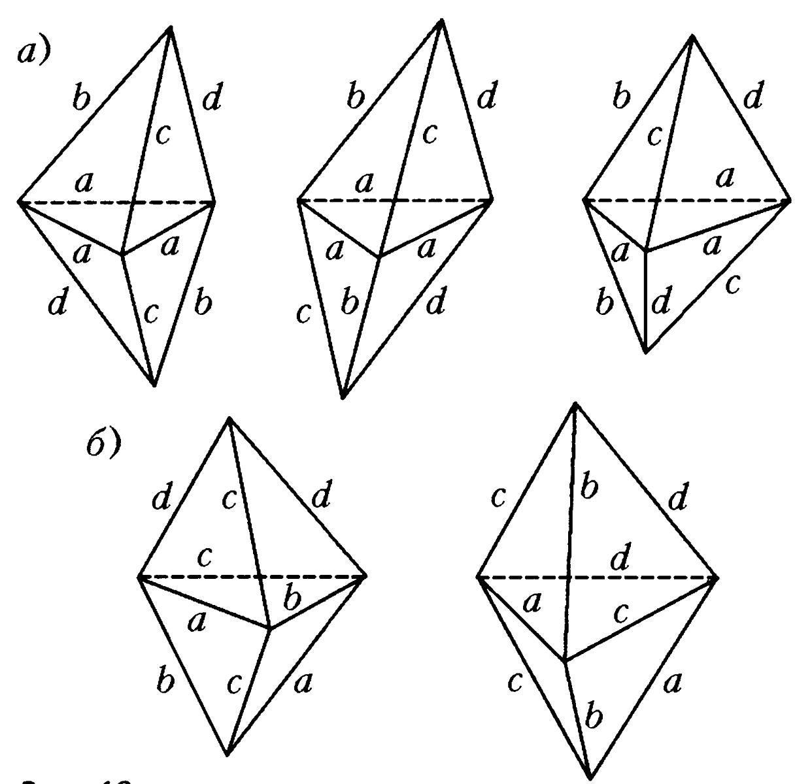
If Andrei had numbered all the edges and written their numbers next to the edges on each face, then Kolya would have glued exactly the same convex polyhedron: if the faces of one convex polyhedron are respectively equal to the faces of another convex polyhedron, then these polyhedra are equal (Cauchy’s theorem - see [83, 99]).
For non-convex polyhedra, Cauchy’s theorem ceases to be true. See Figure 41 for an example.
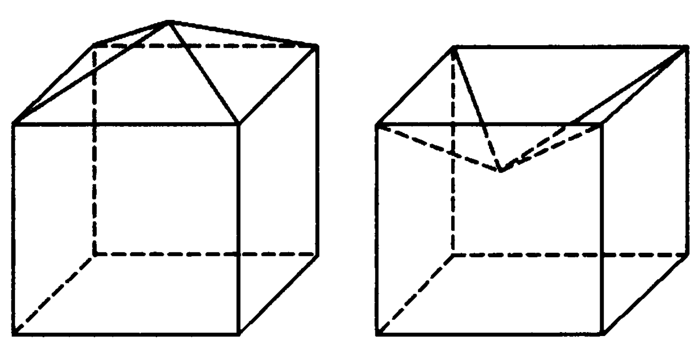
Since the middle of the last century, the following question has arisen: does there exist a non-rigid polyhedron composed of rigid, hinged faces - plates? Only in 1977 did the American mathematician R. Connelly construct an example of such a polyhedron ([50, 83]).
Problem 3-23. Answer: yes, it exists.
Let’s construct such a polyhedron - Figure 42.
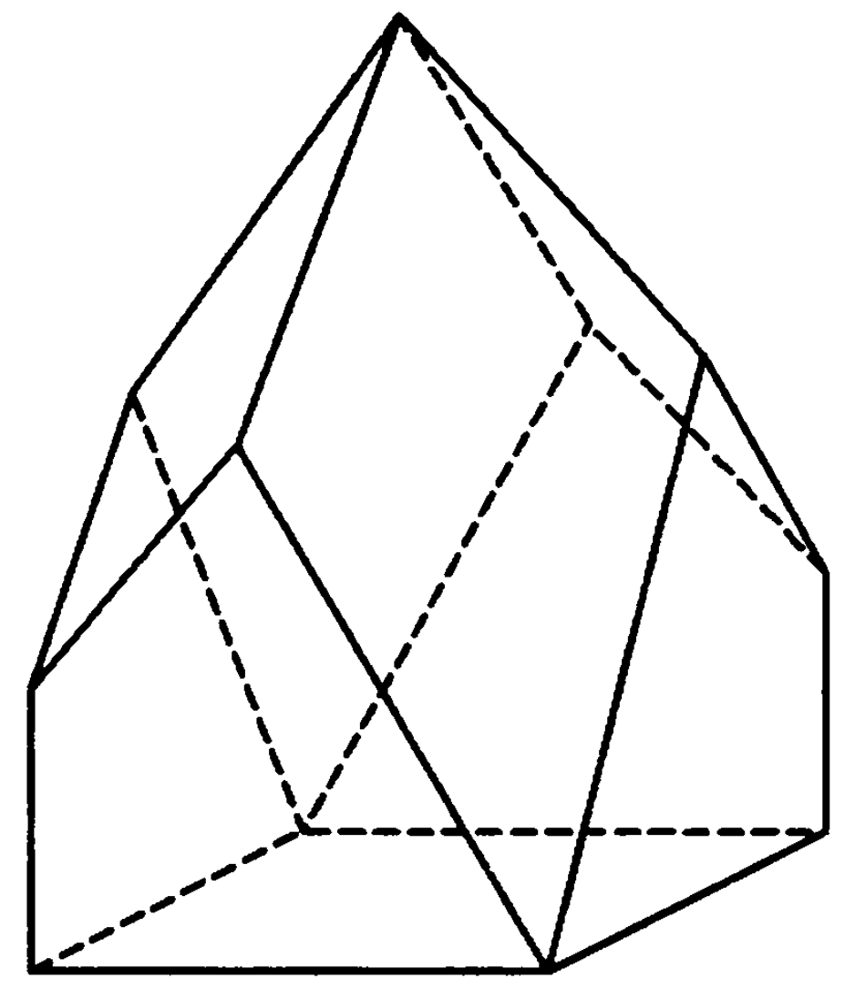
Consider a quadrangular pyramid ABCDE, the base of which is a rhombus ABCD, and the vertex E is projected into the center of the rhombus. Consider in the plane of the base a square AXBCXD with diagonal BD (BD is the smaller diagonal of the rhombus) and a cube whose lower base is this square. Take the intersection of the cube with the pyramid and the part of the pyramid lying above the cube. As a result, we get the desired polyhedron.
An expert could answer the question of problem 3-23 quite simply.
It is enough to draw a flat diagram shown in Figure 43 and refer to Steinitz’s theorem, which states that under natural conditions on a flat diagram, there exists a convex polyhedron whose faces, edges, and vertices are interconnected in the same way as regions, links, and nodes of this diagram - compare the diagram in Figure 43 with Figure 42 - see [99].
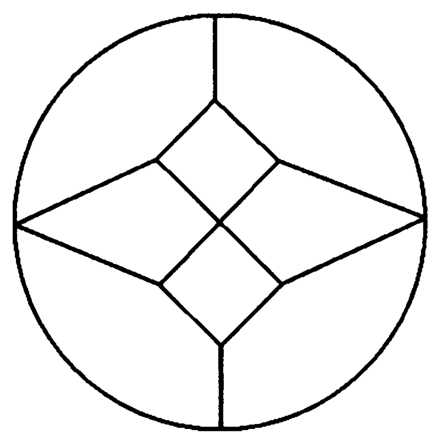
Problem 3-24. Let the acute-angled triangle \(D_1D_2D_3\) with midlines AB, AC, and BC (see Figure 44) be the unfolding of the triangular pyramid ABCD (vertices \(D_1\), \(D_2\), and \(D_3\) are glued into one point D). If the edge corresponds to half of the side of the triangle \(D_1D_2D_3\), then the edge skew to it corresponds to the midline parallel to this side, and vice versa. Therefore, the skew edges of the pyramid are equal.
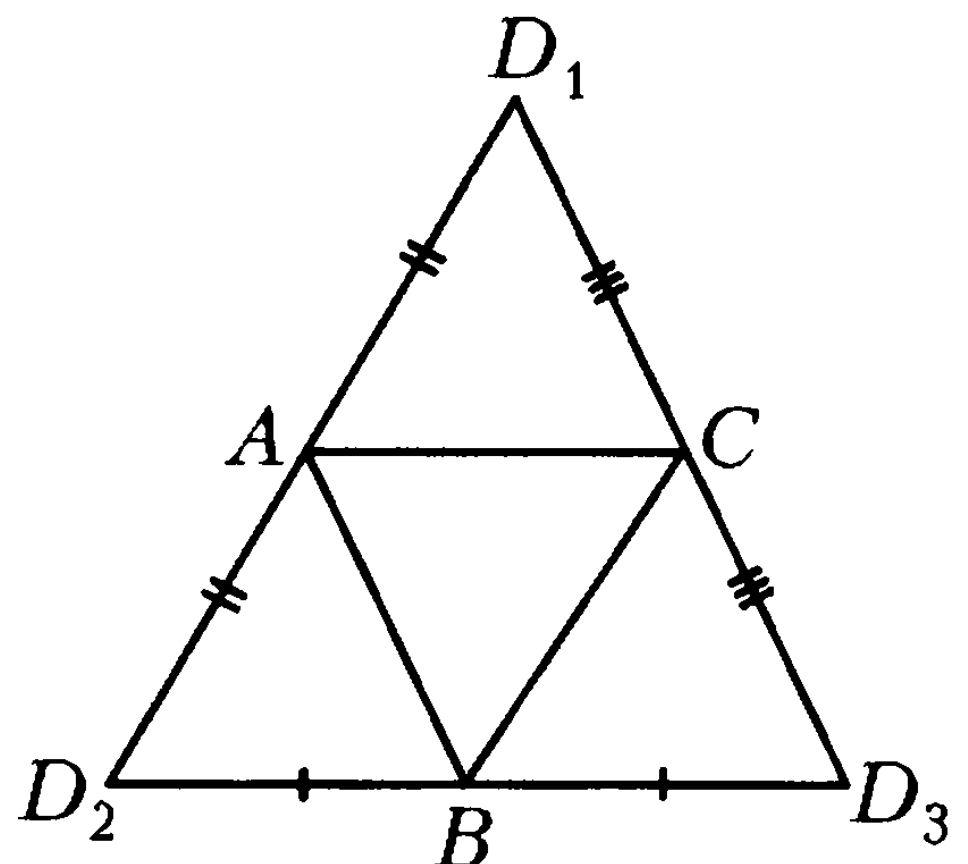
Let’s construct a parallelepiped, four non-adjacent vertices of which are the vertices of a triangular pyramid. To do this, we draw a plane through each edge of the pyramid parallel to the edge skew to it.
Explanation of Problem 3-24:
This problem explores the relationship between the unfolding of a triangular pyramid and the properties of its edges. The key observation is that when the pyramid is unfolded into a triangle, the edges that are skew (i.e., do not share a common vertex) in the pyramid correspond to segments in the unfolded triangle that have a specific relationship: one is half of a side of the triangle, and the other is the midline parallel to that side. This leads to the conclusion that skew edges in the pyramid have equal lengths.
The second part of the problem involves constructing a parallelepiped that contains the triangular pyramid. This is achieved by drawing planes through each edge of the pyramid, parallel to the edge that is skew to it. The intersection of these planes forms the parallelepiped. This construction highlights a connection between the geometry of the pyramid and a simpler, more regular shape.
We obtain three pairs of parallel planes, the intersection of which forms a parallelepiped. Since the skew edges of the original pyramid are equal, each face of the parallelepiped is a parallelogram with equal diagonals, i.e., a rectangle. A parallelepiped whose all faces are rectangles is a rectangular parallelepiped, which is what we needed to prove.
Interestingly, the converse statement is also true.
If the vertices of a tetrahedron are four non-adjacent vertices of some rectangular parallelepiped, then its unfolding is an acute-angled triangle in which the midlines are drawn.
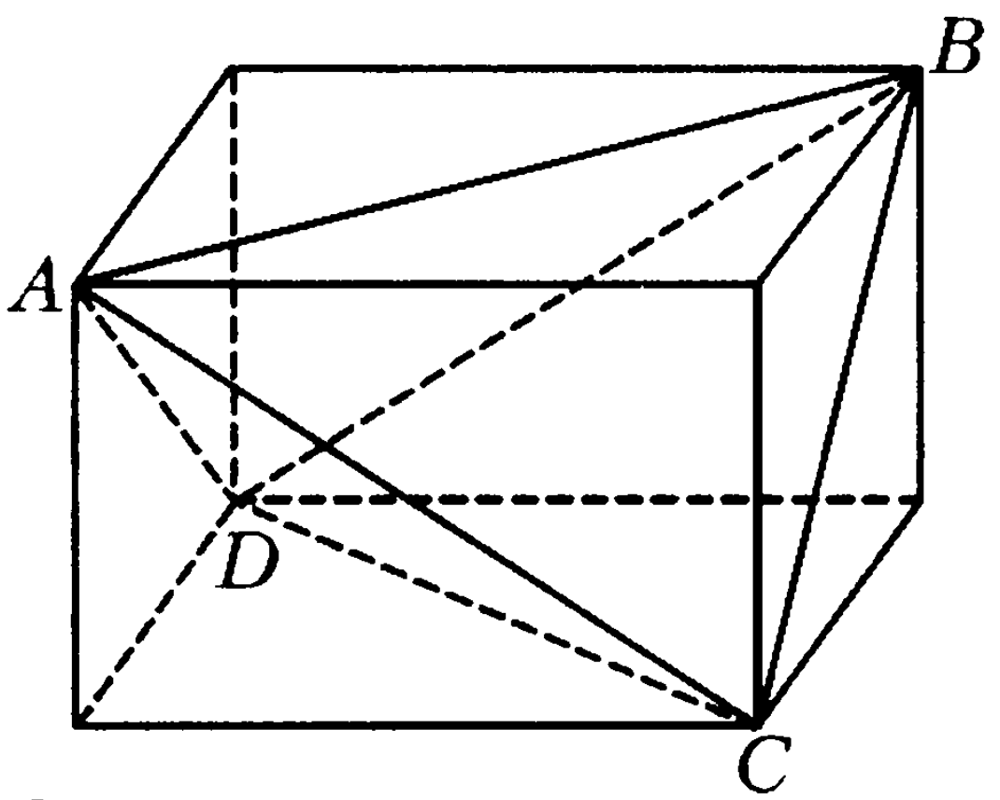
Indeed (Figure 45), three identical triangles are adjacent to each vertex, and they are adjacent with their three different angles; thus, the sum of the plane angles at the vertex of the tetrahedron is 180°. A tetrahedron whose all faces are identical, but not necessarily regular triangles, is often called an isosceles tetrahedron. Such a tetrahedron has the following properties:
- Skew edges are equal to each other.
- The centers of the inscribed and circumscribed spheres coincide.
- The projection onto each plane parallel to two skew edges is a rectangle.
- The sum of the plane angles at each vertex is 180°.
- Each segment connecting the midpoints of opposite edges is perpendicular to these edges, or, which is the same, when rotated around each such segment by 180°, the tetrahedron is aligned with itself (these segments are the axes of symmetry of the rectangular parallelepiped described around it).
- Three segments connecting the midpoints of opposite edges are mutually perpendicular.
Interestingly, each of these properties can be used to derive all the others.
Problem 3-25. Answer: \(\pi - \alpha\), \(\pi - \beta\), and \(\pi - \gamma\).
Let’s choose two of the three constructed rays. Let the faces perpendicular to them form a dihedral angle \(\alpha\). Its edge is perpendicular to the plane in which the selected rays lie, so it cuts a linear angle \(\alpha\) on this plane. The sides of this linear angle and the selected rays divide the plane into four angles; one of them is equal to \(\alpha\), two adjacent to it are right angles, the remaining - the fourth angle - is \(\pi - \alpha\). The angle between the selected rays is equal to \(\pi - \alpha\).
Problem 3-25 shows how the plane angles of one trihedral angle are related to the dihedral angles of another. For trihedral angles, it is easy to derive the cosine formula, which makes it possible, knowing its plane angles A, B, C, to find the dihedral angles; for example, the cosine of the dihedral angle \(\gamma\) can be calculated as:
\[\cos \gamma = \frac{\cos C - \cos A \cos B}{\sin A \sin B} \quad (1)\]
At first glance, it is much more difficult to solve the inverse problem: knowing the dihedral angles \(\alpha\), \(\beta\), \(\gamma\), find the cosines of the plane angles. However, if we use the new trihedral angle constructed in problem 3-25, then the required formula is obtained automatically.
We know from the problem that if A, B, C are the plane angles of the original trihedral angle, then \(\alpha' = \pi - \alpha\), \(\beta' = \pi - \beta\), \(\gamma' = \pi - \gamma\) are the dihedral angles, and \(A' = \pi - A\), \(B' = \pi - B\), \(C' = \pi - C\) are the plane angles of the new trihedral angle:
\[\cos C' = \frac{\cos \gamma' - \cos \alpha' \cos \beta'}{\sin \alpha' \sin \beta'} \quad (2)\]
Formulas (1) and (2) are also called the cosine formulas for spherical triangles. Consider a sphere of unit radius with center at the vertex of the trihedral angle. The trihedral angle cuts out a curvilinear triangle on this sphere. Its sides are arcs of great circles of radius 1, their lengths are respectively equal to the values of the plane angles A, B, C (taken in radians) of the trihedral angle. Its angles are the dihedral angles \(\alpha\), \(\beta\), \(\gamma\) of the trihedral angle. Formula (1) allows us to find its angles from its three sides, and formula (2) allows us to find its sides from its three angles.
The trihedral angle constructed in problem 3-25 also cuts out a triangle on the sphere, which is called the polar to the first one. The problem establishes how their sides and angles are related to each other.
3.2 Independent Practice Problems
3-26. Construct segments given by the formulas (a, b, c, d, e are given segments) using a compass and ruler:
- \(\sqrt{ab}\); 2) \(\sqrt{a^2 + b^2 + c^2}\); 3) \(ab/c\);
- \(a\sqrt{2}/(\sqrt{2} + \sqrt{3})\); 5) \((abc)/(de)\); 6) \(a\sqrt{2}\); 7) \(\sqrt{a^2 + ab + ac}\); 8) \(\sqrt[4]{abcd}\); 9) \(\sqrt[4]{a^3b + ab^3}\);
- \(\sqrt[4]{(a^3/e) + (c^3/d)}\).
3-27. Segments \(a\) and \(b\) (\(b > a\)) are given on a line. Construct segments given by the formulas using only one compass: 1) \(\sqrt{b^2 - a^2}\); 2) \(a\sqrt{3}\); 3) \(a\sqrt{2}\); 4) \(\sqrt{b^2 + a^2}\).
3-28. Construct a triangle using a compass and ruler given two sides \(a\) and \(b\) (\(b > a\)), if it is known that the angle opposite one of them is twice the angle opposite the other.
3-29. A circle and a point outside it are given. Construct a secant passing through this point using a compass and ruler such that the segment of the secant outside the circle is equal to the segment inside it.
3-30. Two radii are drawn in a circle. Construct a chord using a compass and ruler that is divided by these radii into three equal parts.
3-31. Inscribe a square in a given circular segment using a compass and ruler.
3-32. A half-wave of a sinusoid (\(0 < x < \pi\), \(y = \sin x\)) is drawn on the coordinate plane. Construct a rectangle of a given perimeter \(P\) using a compass and ruler, two vertices of which lie on the sinusoid, and the other two are on the x-axis.
3-33. Two segments with lengths 1 and \(\pi\) are given. Construct (using a compass and ruler) a square equal in area to the given circle.
3-34. The graph of the function \(y = x^3\) is drawn on the coordinate plane. Using this graph, a compass, and a ruler, divide a given angle into three equal parts.
3-35. Two mirrors form an acute angle. A ray of light falls on one of its sides. Prove that, no matter how small the angle is, after several reflections the ray will exit it.
3-36. A ball is launched from one corner of a rectangular billiard table with dimensions 19x86 at an angle of 45°. Into which of the pockets located at the corners of the billiard table will the ball fall, and how many times will it bounce off the sides before that? (The ball and pockets are considered points.)
3-37. An equilateral triangle is constructed on the side AB of triangle ABC outwards. Find the distance from its center to vertex C, if the length of side AB is equal to \(c\) and \(\angle C = 120^\circ\).
3-38. Construct the bisector of a given angle using a ruler with 1 cm divisions.
3-39. Construct a regular pentadecagon using a compass and ruler.
3-40. Two points A and B are taken on a plane, the distance between which is an integer \(n\). All circles of integer radii with centers A and B are drawn. A sequence of nodes (intersection points of circles) is marked on the resulting grid, in which every two neighboring nodes are opposite vertices of a curvilinear quadrilateral.
Make a drawing, taking 0.5 cm as a unit, and \(n = 12\).
Prove that all points of this sequence lie either on one ellipse or on one hyperbola.
3-41. a) Draw a figure of three segments on a plane that has six axes of symmetry.
- Can the union of three segments on a plane have more than six axes of symmetry?
3-42. Given a triangle ABC. Find points K and L on its sides AB and BC such that:
- AK = KL = LB; b) AK = KL = LC.
3-43. Given a segment and its midpoint is marked. Using only a ruler, construct a line passing through the given point parallel to the given segment.
3-44. Two parallel lines are given, and on one of them, a certain segment. Using a ruler, construct a segment twice as long as the given one.
3-45. On the sides of an acute-angled triangle, three circles are constructed as on diameters. Prove that the common chords of each pair of these circles are the altitudes of this triangle.
3-46. On each side of an acute-angled triangle, a point is marked and connected to the opposite vertex. On each of the three drawn segments, a circle is constructed as on a diameter. Common chords of each pair of these circles are drawn. Prove that these chords intersect at the orthocenter of the original triangle.
3-47. Kolya marked four points on a plane, measured all six distances between them, and told Vitya these six numbers. Vitya constructed four points on his plane with the same pairwise distances. Is it necessarily possible to superimpose Vitya’s figure onto Kolya’s if: a) only six numbers are given; b) it’s specified which pair of points corresponds to each distance?
3-48. Let \(n\) different lines be drawn on a plane. If \(k\) of these lines pass through a point, then the number \((k-1)\) is called the multiplicity of this point. Prove that the drawn lines divide the plane into \((n + m + 1)\) parts, where \(m\) is the sum of multiplicities of all intersection points of the lines.
3-49. a) A pair of numbers \((n_1; n_2)\), where \(n_1 < n_2\), is called feasible if a triangle can be cut by a line passing through its internal point into an \(n_1\)-gon and an \(n_2\)-gon. How many feasible pairs are there in total? b) A quartet of numbers \((n_1; n_2; n_3; n_4)\), where \(n_1 < n_2 < n_3 < n_4\), is called feasible if a triangle can be cut by a pair of lines passing through its internal point into an \(n_1\)-gon, \(n_2\)-gon, \(n_3\)-gon, and \(n_4\)-gon. How many feasible quartets are there in total?
3-50. Four planes divide space into 15 parts. How many of these parts can contain a sphere touching all four planes?
3-51. Each edge of a tetrahedron is divided into 4 equal parts, and planes parallel to all its faces are drawn through all division points. Into how many parts is the tetrahedron divided?
3-52. What is the maximum number of parts into which four spheres can divide space?
3-53. a) Construct a section of a cube by a plane passing through its center perpendicular to any of its diagonals. b) Take the diagonal \(d\) of the cube as the Ox axis (point O is the center of the cube) and denote by \(S(x)\) the area of the section of the cube by a plane perpendicular to diagonal \(d\) and passing through point \(x\) of the diagonal. Construct the graph of function \(S(x)\).
3-54. In a tetrahedron, the dihedral angles at any pair of opposite edges are the same. Is it true that the opposite edges of this tetrahedron are equal in length?
3-55. Construct a hexahedron in which exactly three edges meet at each vertex, and exactly two faces are pentagons.
3-56. Given a sphere of unit radius and a trihedral angle with its vertex at the center of the sphere. Prove that the area of the spherical triangle - the part of the sphere lying inside the trihedral angle - is equal to \((\alpha + \beta + \gamma - \pi)\), where \(\alpha\), \(\beta\), \(\gamma\) are the dihedral angles of this trihedral angle (angles of the spherical triangle).